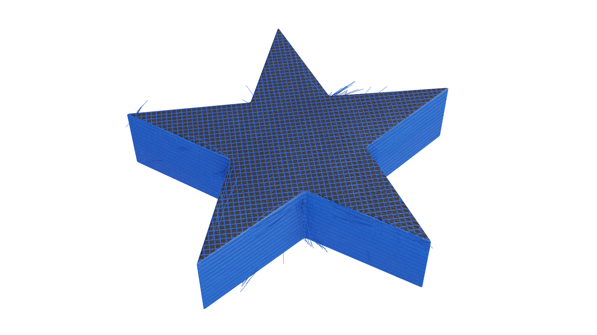
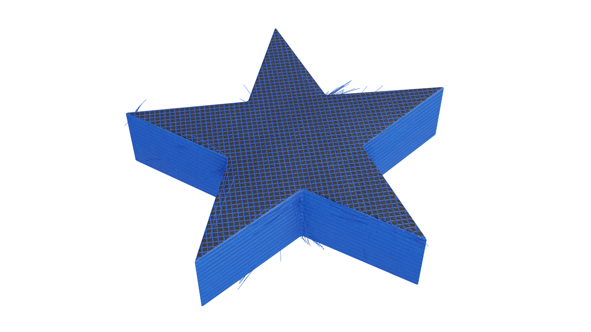
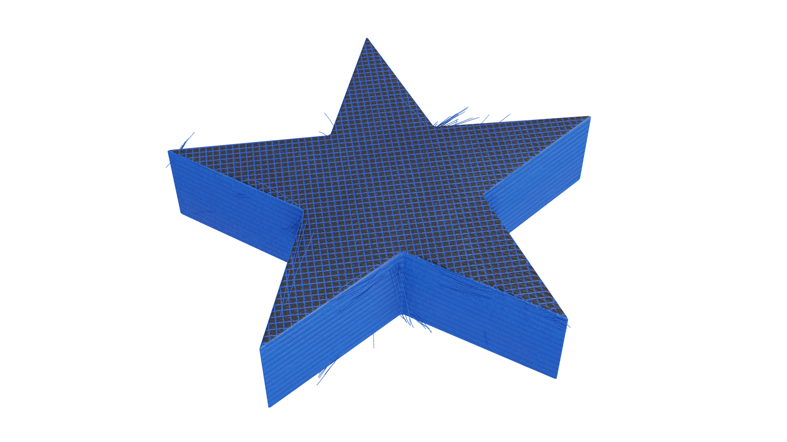

- zapoznaj się z ogólną instrukcją BHP oraz instrukcją drukarki 3d;
- umieść urządzenie na stabilnym podłożu;
- oczyść urządzenie z kurzu i osusz z wilgoci;
- używaj tylko oryginalnego kabla zasilającego;
- zapoznaj się z informacjami dotyczącymi zasilania, które dla konkretnej drukarki są umieszczone na tabliczce zamontowanej z tyłu urządzenia;
- sprawdź, czy drukarka jest podłączona do listwy/gniazdka z uziemieniem;
- zapoznaj się z kartami charakterystyk materiałów, które będą używane w trakcie drukowania;
- pamiętaj, aby wszelkie prace naprawcze i konserwacyjne wykonywać wtedy, gdy drukarka jest odłączona od źródła zasilania;
- dokładnie zaplanuj poszczególne czynności.
2. Podczas pracy drukarki 3d:
- nie dotykaj rozgrzanej głowicy drukującej i stołu drukarki 3d;
- kontroluj temperaturę podzespołów urządzenia - optymalna temperatura zgodna z zaleceniami producenta;
- kontroluj temperaturę pomieszczenia - optymalna to między 5°C a 30°C;
- używaj rękawic ochronnych i unikaj bezpośredniego kontaktu z oczami, szczególnie w przypadku druku z użyciem płynnych żywic;
- nie zostawiaj drukarki bez nadzoru podczas drukowania;
- nie wkładaj rąk ani obcych ciał do wnętrza drukarki, podczas gdy urządzenie jest włączone.
3. Po zakończeniu pracy drukarki 3d:
- wyjmij wydrukowany model dopiero po ostygnięciu;
- wyłącz urządzenie po zakończonym wydruku;
- dokładnie wywietrz pomieszczenie;
- podczas postprocessingu pozbądź się wszelkich odpadków i pozostałości, dokładnie uprzątnij miejsce pracy.
Mając do dyspozycji filamenty: ABS, PLA i PET-G, przygotuj projekt, a następnie wydrukuj ozdobę choinkową o wysokości 2,8 cm i szerokości 5 cm. Wydruk powinien zostać wykonany w oparciu o następujące parametry: wysokość warstwy - 0,28 mm, procent wypełnienia - 50%. Gotowy produkt poddaj wybranej przez Ciebie obróbce końcowej.
Mając do dyspozycji filamenty: ABS, PLA i PET-G, przygotuj projekt, a następnie wydrukuj ozdobę choinkową o wysokości 2,8 cm i szerokości 5 cm. Wydruk powinien zostać wykonany w oparciu o następujące parametry: wysokość warstwy - 0,28 mm, procent wypełnienia - 50%. Gotowy produkt poddaj wybranej przez Ciebie obróbce końcowej.
Kolor
Wysokość warstwy
Procent wypełnienia

Wpisz poprawne wartości wysokości warstwy i procentu wypełnienia.


 
